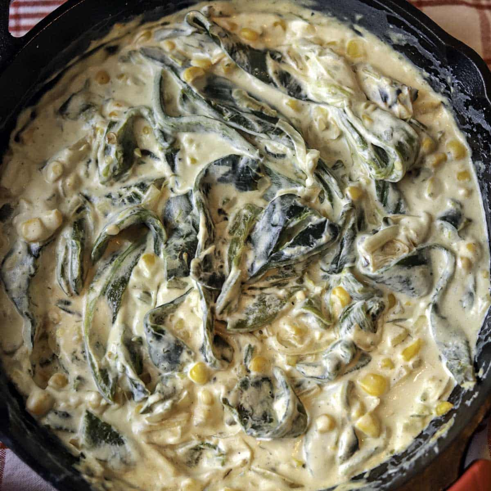

HOME
Rajas con crema

These rajas con crema, roasted poblano pepper strips cooked with onions and Mexican crema, make a great dip. They are also good wrapped in a tortilla or as a side dish to your meal.
Ingredients
- 4 large poblano peppers
- 2 tablespoons butter
- 1 onion, sliced
- 2 large cloves garlic, minced
- 3/4 cup Mexican crema
- 1 teaspoon salt, or to taste
- 1 teaspoon chicken bouillon granules, such as Knorr®
- 1/4 teaspoon freshly ground black pepper
- 1 cup shredded Oaxaca cheese
Steps
- Place poblano chiles directly on the grates of a gas stove. Cook over medium heat, flipping with tongs occasionally, until blackened and charred, about 5 minutes. Place in a sealed plastic bag and allow to cool, 5 to 6 minutes. Peel off charred skins, remove seeds, and slice chiles into strips. Set aside.
- Melt butter in a large skillet. Add onions and cook until soft and translucent, 6 to 7 minutes. Add garlic and cook until fragrant, about 1 minute. Add poblano peppers, Mexican crema, salt, chicken bouillon, and pepper; cook and stir until combined. Turn off heat, add cheese, and stir until melted.
HOME